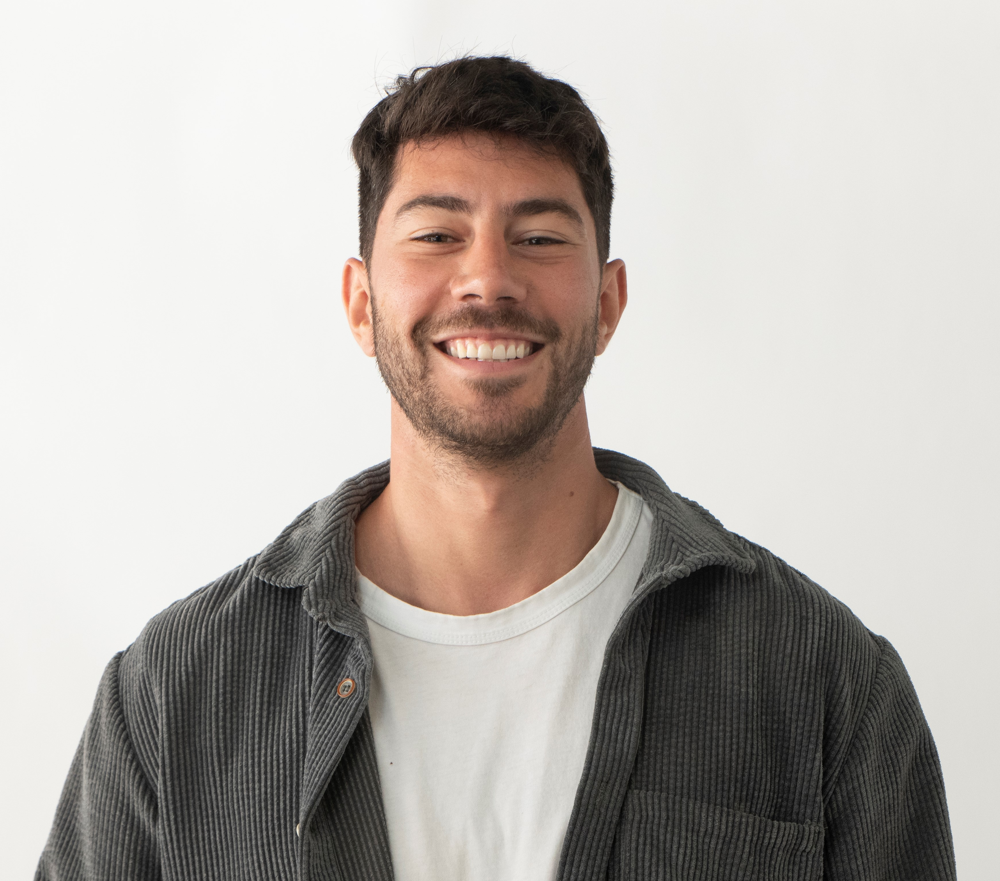

About Me
Diverse experiences define my career but the consistent threads are hustle and curiosity. These qualities made me an early power user of Generative AI. At the outset, I had the instinct that this technology would revolutionize knowledge and creative work, to a similar extent as the Industrial Age. And I wanted in.
I jumped both feed in the barrel; (1) taking technical NLP courses, (2) expanding my software development skills spending nights and weekends on GenAI passion projects and (3) even sharing my GenAI thoughts on Medium. Today, I'm an indie hacker with an entrepreneurial spirit, who agrees with Andrew Ng that the long tail of businesses, non-tech and non-enterprise, have the most to gain from GenAI co-pilots. When I'm not at the computer, you can find me surfing at Malibu or competing in CrossFit competitions. Experience
Projects & Certifications
LLM Streamlit tool that allows users to upload their textual documents so the model can faciliate detailed responses to user queries based on the docs' contents. Features: chunking technique, SQLite relational db for embedding storage, cosine similarity search, evaluation for inference accuracy and relevance, traditional unit testing.
Whoop_GPT

LLM Streamlit tool that provides numerical data to the model instead of textual. Built with Whoop (health and fitness wearable) OAuth2.0 and FastAPI integration. Features: Langchain Tools to conduct data querying and analysis with natural language.
OpenAI Assistants
OpenAI Assistants is my first attempt at customizing an agent with the Assistants API. Retrieval and Code Interpreter out-of-the-box. Custom function calling to come. Integrated a similar version into my portfolio site (see the chatbot icon) to answer questions on my behalf regarding my experience and blog.
DeepLearning.ai - NLP Specialization
Intensive course covering Classification and Vector Space, Probabilistic Models, Sequence Models and Attention Models. The course equips the participant with classical machine learning skills and stat-of-the-art deep learning techniques needed to build NLP systems, such as question-answering, sentiment analysis, machine translation, summarization and chatbots.